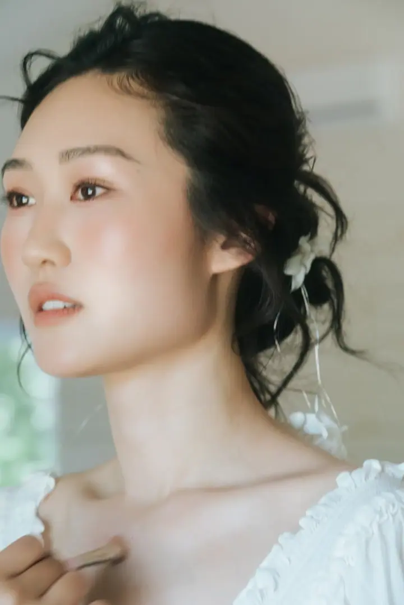
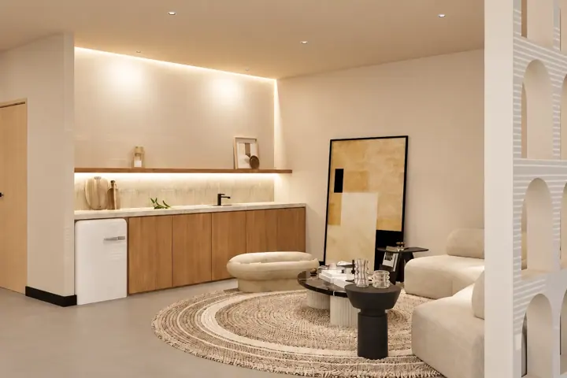
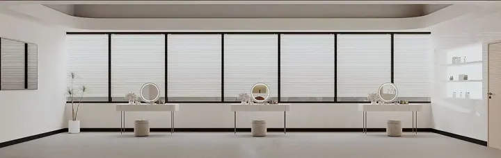
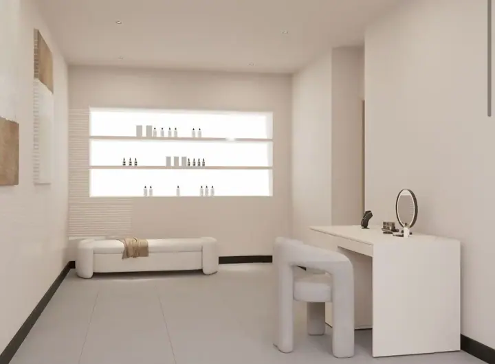
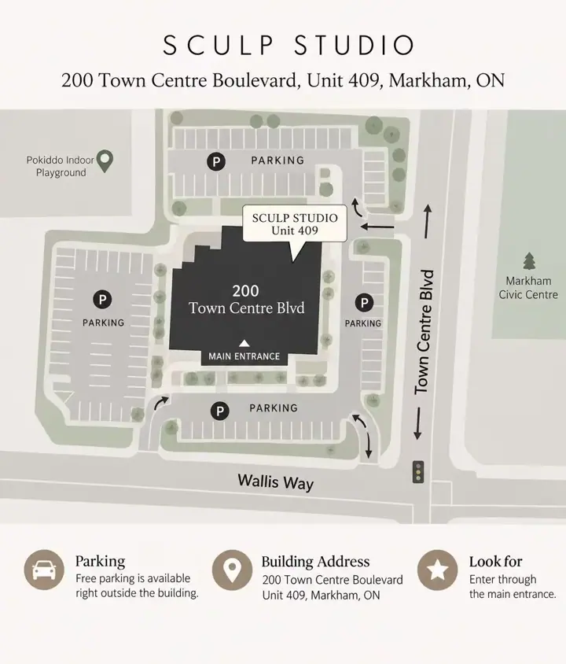

Beauty,
with intention.
SCULP Studio is a Toronto-based beauty studio creating refined styling for weddings, events, commercial work, portraits, and education.
Our approach is simple: begin with the person, understand the context, and build a look that feels considered rather than imposed.

Beauty should still feel like you.
We believe styling works best when it responds to the individual - their features, personal style, setting, clothing, light, and the way the final look will be seen both in person and on camera.
Rather than applying the same formula to every face, we focus on balance, proportion, texture, and detail.
The result should feel polished, intentional, and recognizably yours.
Considered from every angle.
Bridal
We consider the dress, hair, venue, photography, timing, and atmosphere of the day - not only the styling itself.
Commercial & Portrait
We consider concept, lighting, camera, styling, and the final image so the styling supports the whole visual direction.
Personal Beauty
We focus on what feels natural to wear, easy to maintain, and appropriate to the moment.
Different settings ask for different decisions. That is where the work begins.



A calm space,
made for beauty.
Appointments take place in our private Markham studio, with complimentary parking available around the building.
Unit 409
Markham, Ontario
Enter through the main entrance and take the elevator to Unit 409.
